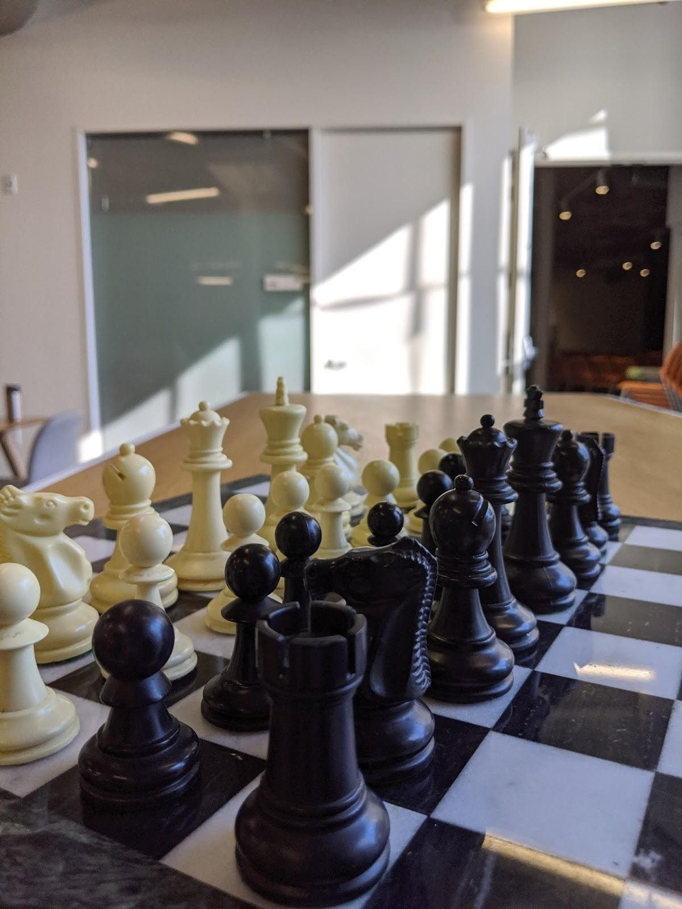

Learning to Autofocus
| Charles Herrmann | Richard Strong Bowen | Neal Wadhwa | Rahul Garg | Qiurui He |
| Jonathan T. Barron | Ramin Zabih |
| Google Research |
| | Paper | Dataset Capture | Samples of RGB and Depth | Dataset | |
|
Left: Our Dataset. We provide a realistic dataset of 510 focal stacks captured "in the wild" along with a computed depth from SFM on 5 different views. These focal stacks have a large variation in color, texture, scene elements, and depth. Middle: Our Problem Formulation. We define Autofocus as three different problems: single-slice where the algorithm receives a single capture at a random starting point and then estimates the most in-focus index; focal stack where the algorithm receives the full focal stack and then estimates the most in-focus index; and two-step where the algorithm receives a single capture at a random starting point but can then pick the next index to capture, then the algorithm uses these two captures to estimate the most in-focus index. For each of these formulations, we run computations on two different input values: conventional sensor data and dual pixel sensor data. Right: Our Results. Our network results in substantial improvements over the baselines, leading to a 4x improvement in single slice, 3x in two-step, and ~1.5x in full focal stack. |
Abstract
Autofocus is an important task for digital cameras, yet current approaches often exhibit poor performance. We propose a learning-based approach to this problem, and provide a realistic dataset of sufficient size for effective learning. Our dataset is labeled with per-pixel depths obtained from multi-view stereo, following "Learning single camera depth estimation using dual-pixels".
Using this dataset, we apply modern deep classification models and an ordinal regression loss to obtain an efficient learning-based autofocus technique.
We demonstrate that our approach provides a significant improvement compared with previous learned and non-learned methods: our model reduces the mean absolute error by a factor of 3.6 over the best comparable baseline algorithm.
Our dataset is publicly available.
Papers
 |
"Learning to Autofocus" |
Dataset Capture

|
Samples of RGB and Depth

|
 |
Dataset
Training Set: Split over 7 archives
Train1 (95 GB)
Train2 (100 GB)
Train3 (99 GB)
Train4 (102 GB)
Train5 (99 GB)
Train6 (99 GB)
Train7 (87 GB)
Code
We are happy to take any questions on the code. The code follows the standard classification pipeline with Ordinal Regression loss and a slightly altered MobileNetV2 (details included in the paper). Please contact cih at cs dot cornell dot edu if you have any questions.